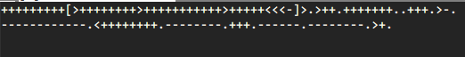
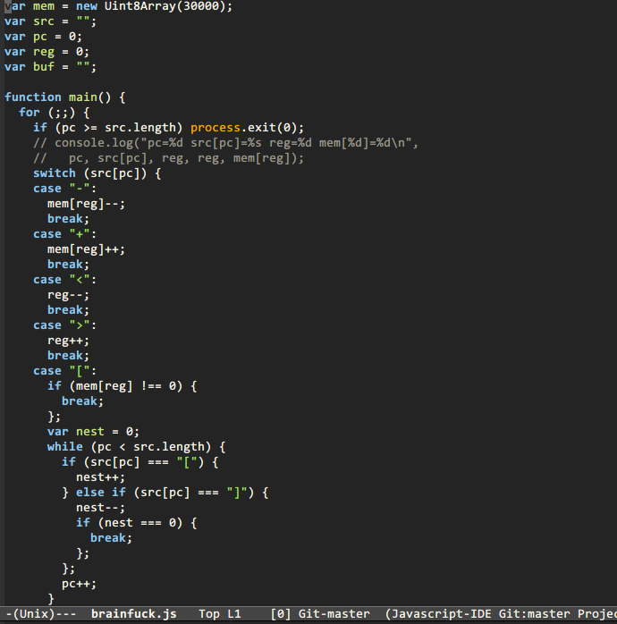
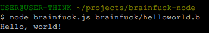
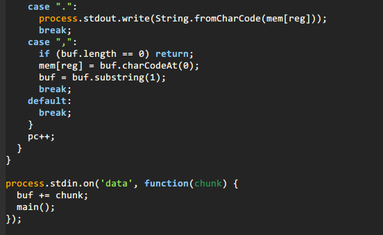
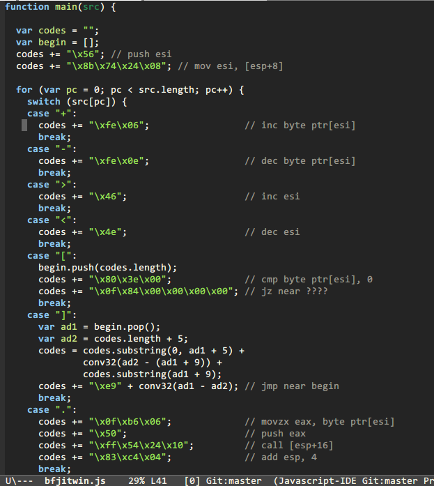
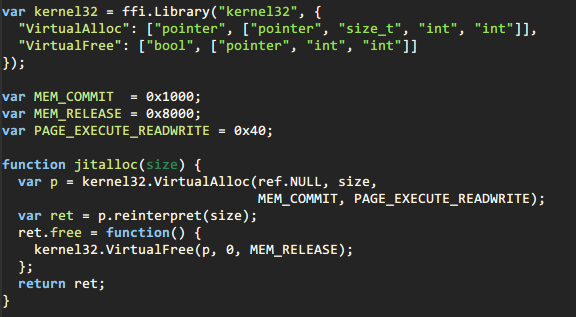
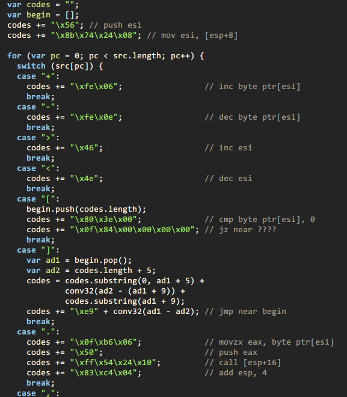
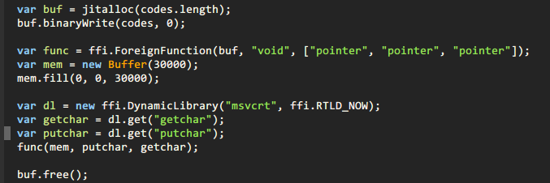
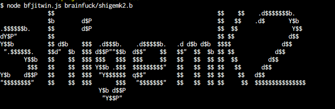

Your browser doesn't support the features required by impress.js, so you are presented with a simplified version of this presentation.
For the best experience please use the latest Chrome, Safari or Firefox browser.
Brainfuckで遊ぼう @shigemk2
Node.jsでBrainfuckをごにょごにょしてみた
Brainfuckとは
以下のワードだけで構成されるプログラミング言語
+ - [ ] < > , .
| 記号 | 処理 |
|---|---|
| > | ポインタをインクリメントする |
| < | ポインタをデクリメントする |
| + | ポインタが指す値をインクリメントする |
| - | ポインタが指す値をデクリメントする |
| . | ポインタが指す値を出力に書き出す |
| , | 入力から1バイト読み込んで、ポインタが指す先に代入する |
| [ | ポインタが指す値が0なら、対応する ] の直後にジャンプする |
| ] | ポインタが指す値が0でないなら、対応する [ （の直後[1]）にジャンプする |
アルファベット H を出力するコード
+++++++++[>++++++++<-]>.
Hello, world!
ではNode.jsでどうするのか
1. インタプリタ
2. JITコンパイラ
1. インタプリタ
BrainfuckコードをNode.jsで分析しながら実行する
コード
例
感想
ループの中でコールバックが来ないのでしんどかった
2. JITコンパイラ
BrainfuckコードをNode.jsでx86の機械語に変換して実行する
コード
1. メモリを確保する
2. 機械語をメモリに書き込む
3. 機械語を実行する
以上のことをffiモジュールを使ってやる
Windowsの関数でメモリを確保する
機械語をメモリに書き込む
機械語を実行する
AAをJITコンパイラで表示させる
例
感想
機械語のデバッグが大変だった
Special Thanks
@7shi
Use a spacebar or arrow keys to navigate